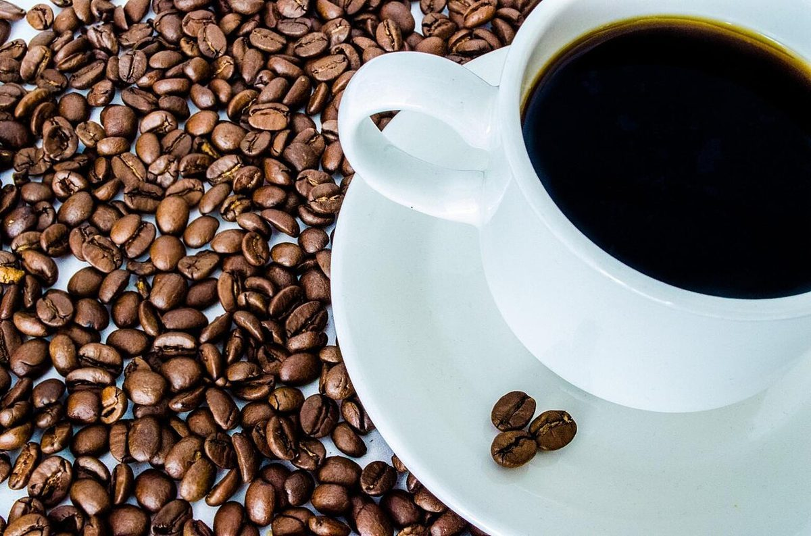
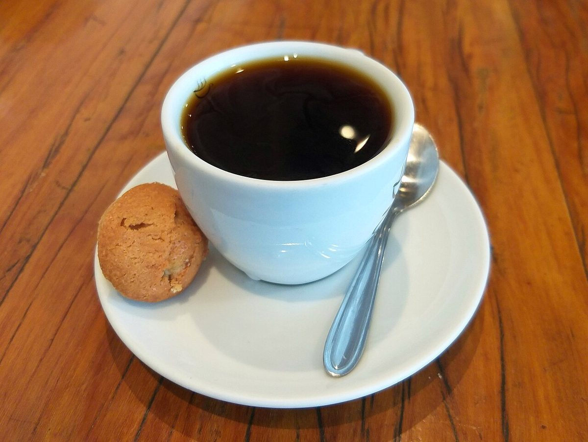
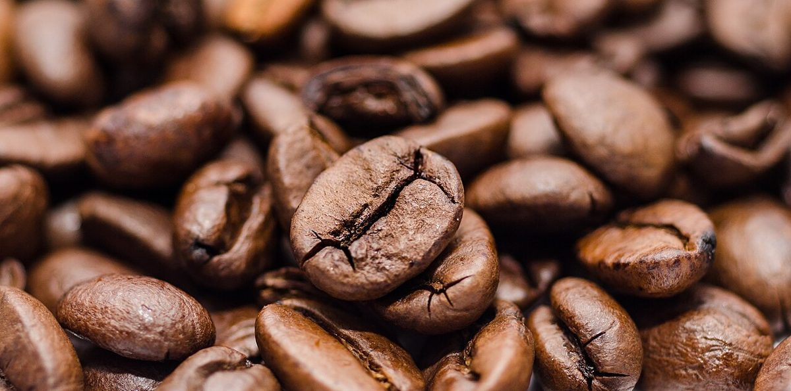

カフェ(コーヒー) / 福井県福井市
CTSシー・ティー・エス
福井県福井市のカフェ「CTS」のご案内ページです。営業時間やメニューなど、詳しいことは準備中。まずはInstagramをのぞいてみてください。
制作側の連想
3つのキーに見立てて
店名「CTS」の由来や意味は分かりません。制作側は「3文字」という見た目から、キーボードの3つのキーを連想しました。そして、この3文字に合わせて、勝手に「C=Cup(カップ)」「T=Table(卓)」「S=Seed(豆)」と読み替え、コーヒーの写真を3つのキーに仕分けています。制作側の連想で、お店の理念・由来とは無関係です。
C
Cupカップ
カップを写したイメージ写真。



T
Table卓
卓の上のイメージ写真。


S
Seed豆
コーヒー豆(コーヒーの種)のイメージ写真。



ご案内
お店のこと(確認できたものだけ)
| 所在地 | 〒910-0024 福井県福井市照手1丁目10-20 |
|---|---|
| 電話 | 0776-22-5792 |
| 営業時間 | 準備中 |
| 定休日 | 準備中 |
| ご予約 | 準備中 |
| 駐車場 | 準備中 |
| SNS | Instagram @cts_coffee_to_sand |